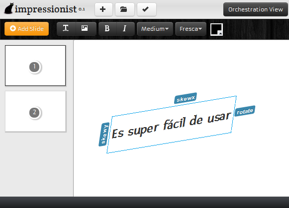

Olvídate de Powerpoint y comenza a usar impress.js
La primera vez que vi un slide parecido a impress.js fue en la DrupalCamp del año pasado (2011). En ese caso lo que vi era Prezi.
Tanto impress.js como Prezi son aplicaciones que nos permiten hacer slides pero de una forma mucho mas atractiva haciendo uso de zoom, rotación, perspectiva y alguna que otra cosita mas.
Es solo verlo para entender el potencial de este tipo de herramientas:
En Chrome o Safari abran este link y usen las flechas izquierda y derecha o simplemente la barra espaciadora para avanzar.
A que esta bueno!?
Para poder implementar esta libreria tenemos dos opciones. La fácil y la divertida.
La fácil es usar una app llamada “Impressionist” que ha desarrollado Harish Sivaramakrishnan y que es la mar de simple. Solo tenes que ir agregando slides y en cada una de ellas vas colocando el texto o imagenes y finalmente podes descargar el slide terminado.

Link: http://hsivaram.com/impressionist/0.1/
La forma divertida: Hagamoslo nosotros 😀
Vamos a hacer una implementación bien simple:
|
1 |
O cuando nos desplazamos haciendo giros
Y si encima aplicamos un buen zoom, podemos obtener cosas muy locas
Pueden verlo en funcionamiento pinchando acá.
Del código anterior no hay que explicar mucho, pero aclaro que:
- Los “step” deben estar dentro del id #impress y a su vez este id es obligatorio.
- Cada step es un div que utiliza propiedades para configurar la posición en la que esta colocado, el tamaño, la rotación, etc. las propiedades disponibles al día de hoy son:
- data-x, data-y, data-z para el posicionamiento;
- data-rotate-x, data-rotate-y, data-rotate-z, data-rotate para manipular la rotación.
- data-scale para el escalado/tamaño.
- Ya por ultimo solo estamos incluyendo impress.js e inicializandolo.
Chau!


Interesante. Había escuchado de Impress antes y la verdad que prometía y mucho, pero lo que no conocía era esta herramienta para editar y crear presentaciones al mejor estilo Prezi. Sin duda que para un programador, Impress.js le brinda un framework ideal para crear mejores presentaciones que Prezi. Saludos!
Me parece muy bueno e innovador, es un gran aporte.
saludos
Hola muy bueno! He probado en incrustarlo dentro de mi Web pero no a pantalla completa, sino en un div. Todo ok pero cuando salto de slide me hace un scroll al top de la página. Sábes cómo evitar esto?